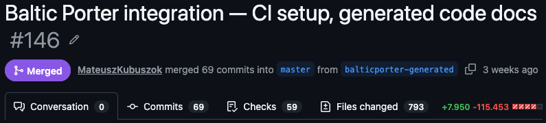
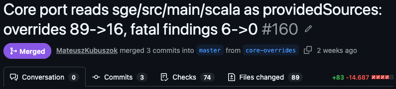
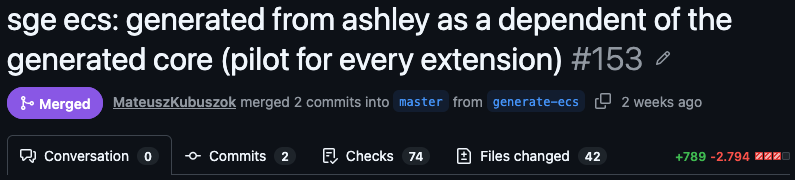

A Report from the Trenches
Mateusz Kubuszok
Scala developer for almost 12 years
co-author and maintainer of Chimney for about 9 of them
blogged at Kubuszok.com
wrote Things you need to know about JVM (that matter in Scala)
several presentations about metaprogramming in Scala
| What a game needs | libGDX + Gradle | Scala + sbt |
|---|---|---|
| Desktop apps for Windows / macOS / Linux, built on one host | Construo (jlink + native launcher) | sbt-native-packager: packages only for the platform you build on |
| Android: dex, shrink, sign, package | Android Gradle Plugin (D8, R8 / ProGuard, signing) | sbt-android: unmaintained for years |
| iOS: AOT-compile to ARM, package the app | RoboVM / MobiVM Gradle plugin | Nothing: RoboVM doesn't support Scala, Scala Native has no iOS |
| Browser build, and knowing which assets exist at runtime | GWT Gradle plugin; the build generates assets.txt, which GWT's preloader reads to fetch and list assets | Scala.js has no classpath, so getResourceAsStream finds nothing; no build step to embed assets or generate a manifest |
| Native libraries for every platform | gdx-jnigen + per-platform natives JARs | JVM: extract from the JAR by hand; Scala Native: install the library on the system and pass linker flags yourself |
I had a demo like this in March
What you’ve just seen is the first iteration of a different approach
It needed tooling that Scala doesn’t have
break became a method exit, so truncation is a no-op// gx += xAdvances[ii] commented out, so every glyph is drawn at the same xThe agents aren't trustworthy because they are non-deterministic.
re-scale: a command-line tool and Claude Code plugin that checks every ported file against its original
| The check | How the agents got past it |
|---|---|
| A certificate per file (its methods and size), checked in CI | ~1,200 certificates stamped in one commit, while the CI check was switched off |
| Method list must match the original | Every method kept, bodies hollowed: a loop break became a method exit; gx += xAdvances[ii] commented out |
| Size compared with the original | Caught colorful at 19%, but full-size files were still wrong; the minifier grew to 162% of the original at ~40% conformance |
| Scanner for TODO / stub wording | Debt reworded ("Partial-port debt"), comments rewritten "to clear the scanner" |
| Auditor agent on a different model | Same-model audits explained gaps away; pinned models silently fell back when Fable was off; one reviewer invented 3 of 5 findings |
Baltic Porter: a deterministic Java → Scala 3 translator. Agents build and measure it; they don't port code.
| The approach | What still went wrong |
|---|---|
Each project owns its porting rules: renames, Nullable, opaque types, a few hand-written overrides | The rules are code too, so they need review |
| Agents build the translator, never the port | The Mermaid "generator" was 187 templates copied byte for byte from the agent port |
| Tests are the judge | 28 test suites stubbed out → "0 failures, 18,011 tests"; 23 tests switched off 28 minutes after a regeneration |
| Generated code is never edited | Regex patches over generated code, assertions loosened to make it pass; reverted later |
| Deterministic translation | Compiling is not the same as correct: a dropped break, a wrong equality, found only by running tests |
The limit is now test coverage, not honesty.
Everything built along the way became multiarch-scala: sbt plugins and small runtime libraries
| In libGDX | JVM | Scala Native | Browser |
|---|---|---|---|
| LWJGL (OpenGL) | ANGLE via Panama | ANGLE via @extern | WebGL |
| LWJGL (windows, audio) | GLFW, miniaudio via Panama | GLFW, miniaudio | DOM, Web Audio |
| jnigen natives (buffers, images) | Rust library via Panama | same library, same C interface | pure Scala |
| FreeType (fonts) | Rust wrapper via Panama | static library | none |
| Box2D / Bullet (physics) | Rapier via Panama | static library | Rapier as WASM |
| Problem before | What multiarch-scala adds |
|---|---|
| JVM: no standard way to ship and load native libraries | Provider JARs with a manifest, and a loader: detect the platform, extract, load |
| Scala Native: the library must be installed on the system, and you write the linker flags yourself | The provider JAR carries static libraries and linker flags per platform; resolving dependencies is enough to link |
| You can only build for the machine you are on | Native binaries cross-compiled with zig; desktop JVM apps packaged for every system from one host |
| No maintained sbt Android plugin | An Android plugin: dexing, resources, signing |
Scala.js: no classpath, no ServiceLoader | Assets embedded at build time behind one resource API; a ServiceLoader generated at compile time |
| Part of SGE | State | Still maintained by hand |
|---|---|---|
| libGDX core | generated from upstream at build time | 5 hand-written overrides |
| Utilities and 6 small extensions | generated | almost nothing |
| The other ~690 extension files | porting rules not written yet | still the agent port |
Tests pass on JVM, JS and Native
Share of the translator's recorded decisions for SGE core
Nullable instead of nullPixels, Align, Input.Button, …)Sge context instead of global variables


Three SGE pull requests: about +8.8k / −133k lines, with tests and demos still passing
| Libraries ported into SSG | Source language | State |
|---|---|---|
| Markdown parser, Liquid templates | Java | generated, tests pass |
| KaTeX, terser, rough.js, Mermaid | TypeScript / JavaScript | still the agent port; 0–6% of method bodies translated |
| Sass compiler | Dart | still the agent port; nothing translated yet |
| HTML/CSS minifier | Ruby | agent port, no translator |
Over twelve thousand tests pass on every platform, but the non-Java ones still run the agent-written code
Automatic porting of libraries is not a solved problem
Every LLM will mislead you
Being certain means reviewing all of the code: impossible at this size
So take away every chance to cheat: guardrails shrink the review, they never remove it
Use the LLM to build a deterministic migration, then run that
Scala targets natively what Java reaches with hacks: a separate AOT compiler for iOS, a Java-to-JavaScript compiler built outside the language
The community already builds tooling for multiple platforms, without weird hacks in the build
Out of the box: backends, sometimes frontends, CLI tools
Scala Native works flawlessly only if the native libraries are already installed on the system
All of it looks solvable, often by reusing existing solutions
Someone just has to point at it
Frontend, native bindings, native libraries: room for low-level libraries
Not immutable FP, but metaprogramming: macros, `inline def`s, specialization
Closer to Java, no runtime reflection: code that optimises itself at compile time and stays readable